Use your smartphone's magnetometer to detect abandoned oil & gas wells. Walk, collect, and contribute to updating a national database of orphaned wells.
Get Started ↓The MagMapper app enables citizen scientists to detect and verify the locations of undocumented orphan wells using only a smartphone. Of the estimated 3.5 million abandoned oil and gas wells across the United States, only 2–3% are adequately documented. MagMapper provides a low-cost detection solution by measuring magnetic anomalies created by buried metal well casings, helping to update the national database of orphaned wells.
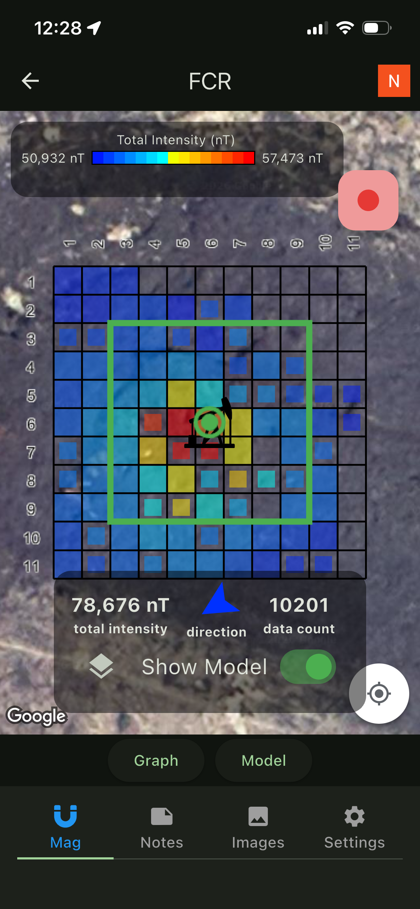
Abandoned well sites may have hazardous conditions: unstable ground, toxic gases, or hidden openings. Never approach a well opening directly. Stay on stable ground, inform someone of your field plans, and carry appropriate safety equipment. If you encounter a dangerous site, note it and move on.
MagMapper guides you through the entire process. Here's how it works.
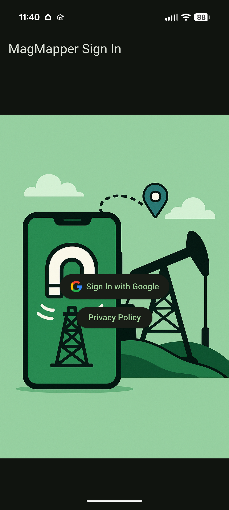
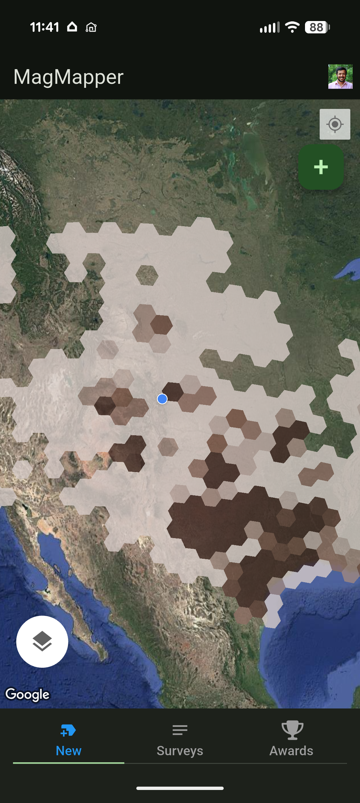
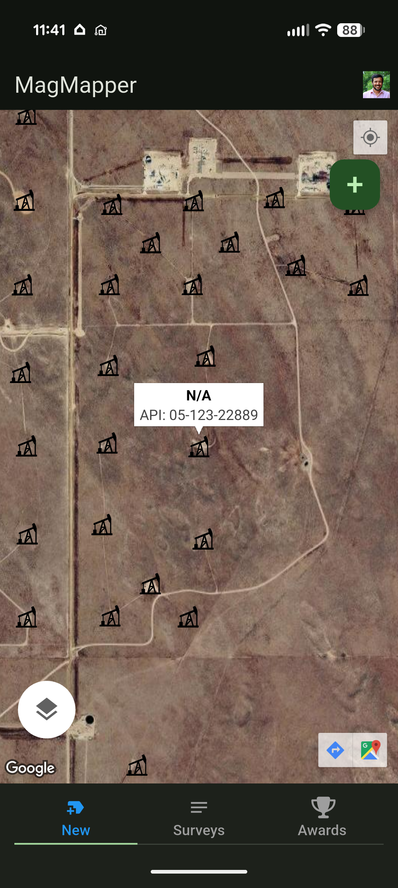
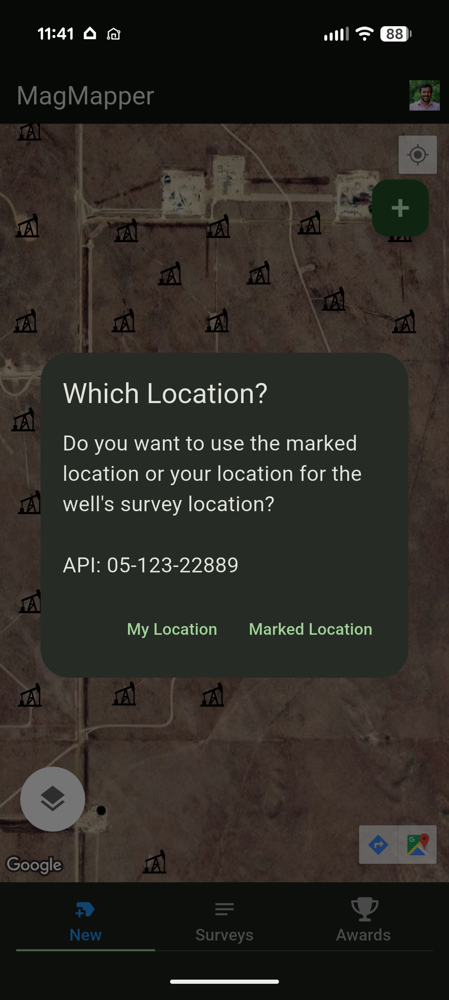
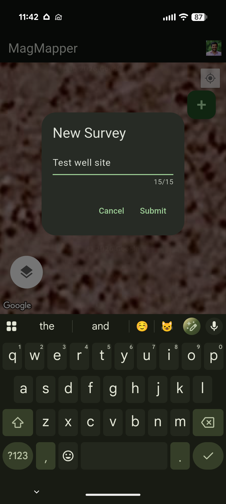
Walk around the survey area while MagMapper collects and visualizes magnetic readings in real time.
Tap the red record button to start. As you walk, the app reads your phone's magnetometer and GPS, placing each measurement into the correct grid cell. Cells fill with color as data accumulates:
Grid, zigzag, spiral — any pattern that covers the area works. The app maps your position to the nearest grid cell regardless of your walking path.
The bottom bar shows total magnetic intensity (nT), compass direction, and data point count in real time. Toggle between Map, Graph, and Model views.
Cells with fewer than 50 data points are shown as smaller rectangles — walk back to fill them. A green progress bar tracks grid completion toward the 50% threshold for the Show Model toggle.
Two Survey Strategies — Choose Based on Location Confidence
When the well location is known (visible casing, or accurate database coordinates), use a small grid (1–2 m cells) centered directly on the well. Walk any pattern — grid, zigzag, or spiral — to fill the cells.
Four tabs give you full control over data collection, documentation, and analysis.
Real-time magnetic field grid map, interactive graph, and model overlay. Switch between Total Intensity, Horizontal, and Vertical components.
Record text observations and up to 3 audio notes (60 sec each) to document field conditions and observations.
Capture up to 6 site photos using your camera or select from your gallery. Document visible infrastructure and terrain.
Configure cell size (1–5 m), grid dimensions (7–25 cells), sample rate (1/5/10 Hz), and display channel. Export CSV or upload to CIRES.
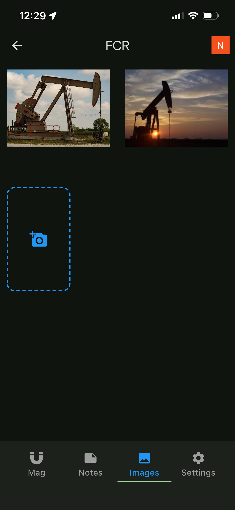
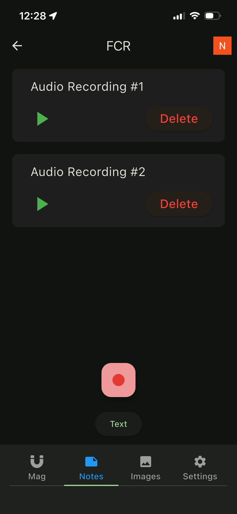
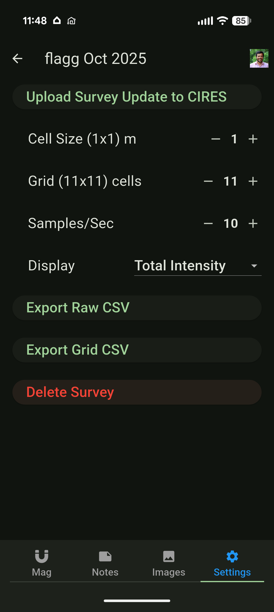
MagMapper includes a physics-based inverse modeling algorithm that estimates well depth and magnetic properties from your survey data.
Two thresholds: The Model toggle appears once 50% of the overall grid is filled. To run the inversion, ~90% of cells within the selected model window must be filled (the green box on the map — its size is set by the diameter parameter in inversion settings).
“Insufficient Data” appears when <90% of the model window cells are filled. Fix: walk more within the model area, or reduce the diameter.
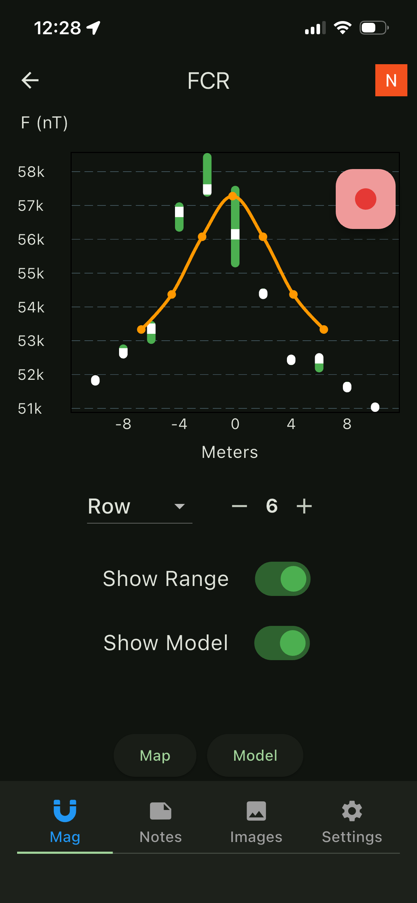
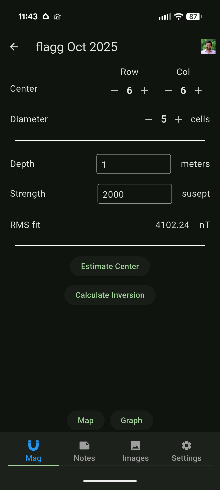
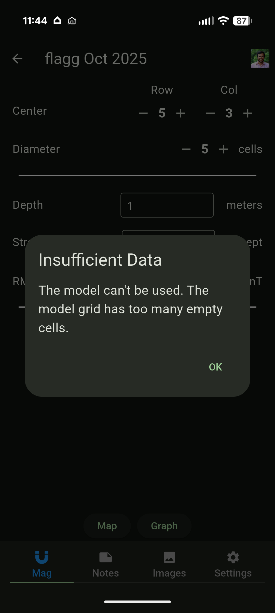
Your survey data contributes to a national database of orphan wells. Upload securely with one tap.
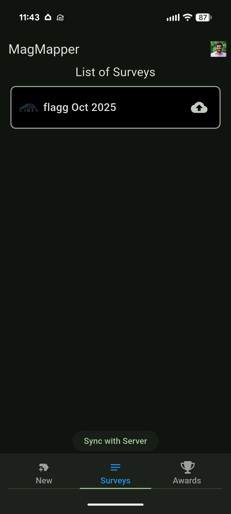
Find "Upload Survey Update to CIRES" in the Settings tab. Updated surveys can be re-uploaded — the CIRES badge on your survey list confirms successful submission.
MagMapper rewards your citizen science contributions with badges, medals, and competitive rankings.
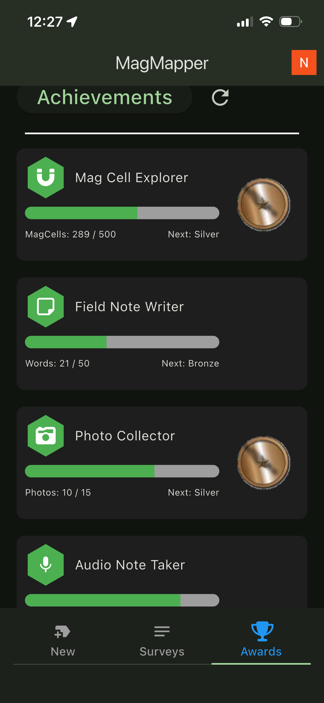
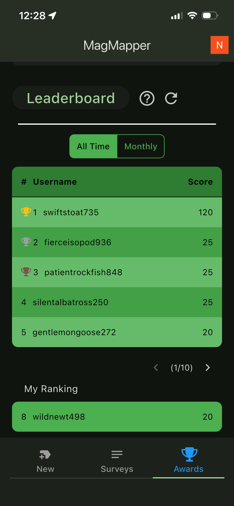
On Android, MagMapper will prompt you if calibration is needed — wave your phone in a figure-8 pattern. iPhones calibrate automatically in the background.
Grid, zigzag, spiral — any pattern works. Just cover the area at a steady pace so cells fill evenly.
Keep your phone at a consistent height (waist level works well). Avoid tilting or rotating during recording.
The model toggle appears at 50% coverage, but inversion needs ~90% of the model window filled. Keep walking!
Add photos, notes, and audio. Visual context helps researchers validate your magnetic data.
Use Export CSV for your own analysis. Upload to CIRES to contribute to the national orphan wells database.